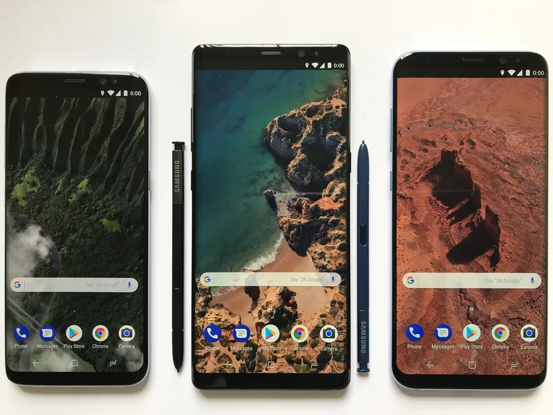
Hola soy Nicolás, y al igual que tú, he estado aprendiendo progresivamente como mejorar mi conectividad para hacer SOLE. No soy un experto en el tema, pero mediante búsquedas en Internet →, tutoriales y, sobre todo, prueba y error, he aprendido un montón y he montado soluciones funcionales.
¿Qué es comprar un celular adecuado para ti?
En esta solución en particular aprenderemos como comprar un Smartphone → según tus posibilidades y necesidades. A continuación te vas a encontrar una serie de información, criterios y consejos que tratan de ser lo más claras posibles para que puedas sentirte acompañado en la toma de decisión de qué celular puedes comprar. El tiempo estimado de lectura es de 12 minutos y consta de 10 items, pero no te asustes, puedes leer estos ítems con ayuda de otras personas. Recuerda que en SOLE Voltaje queremos promover el uso colectivo de internet.
¿Para qué sirve?
En esta solución encontrarás unos cuantos consejos prácticos para poder tomar una decisión mucho más informada sobre cuáles son los celulares más adecuados para ti.
¡Antes de empezar, algunas cuestiones éticas!
En SOLE Voltaje hablamos desde apoyar a la gente a aclarar la implicación ética de una decisión problematizando la circunstancia que te lleva a tomar esa decisión. Esta solución parte del supuesto de que deseas comprar un celular, ¿será que si lo necesitas realmente? No siempre esta es la mejor opción para ti. A veces dispones de un celular viejo que te puede regalar un familiar o, por diferentes razones, prefieres no tener celular y es mejor opción para ti tener un computador. Si definitivamente después de hacer un barrido de tus opciones consideras que necesitas comprar un celular ¡este es el lugar adecuado para ti! Acá te aconsejamos qué debes tener en cuenta a la hora de comprar un celular.
¿Qué necesitas?
- Ahorrar dinero para la compra.
- Acceso a internet.
- Una tienda o distribuidor de confianza.
- Curiosidad.
¿Cómo hacerlo?
Paso 0 → ¿Cómo saber si necesito comprar un celular?
Una de las características de nuestra época actual es el gran desarrollo de mercados internacionales y nacionales, nuestros celulares los hacen en China y podemos comprarlos en Colombia, podemos ir al mercado y comprar arroz traído de Brasil. Además, encontramos desproporcionadas opciones de consumo, podemos comprar arroz blanco, arroz amarillo, arroz a granel, arroz con sabor a limón, etc. Hay un sin fin de opciones para convertirnos en consumidores de productos, que, muchas veces no necesitamos, así terminamos comprando alimentos no nutritivos, y recaemos en un gasto más que no satisface la principal función de la alimentación ¡nutrirnos!; del mismo modo, nos llenamos de un sin fin de mercancía en casa que termina arrumada o desechada porque, al final, no nos servía para nada. Por esto nosotros queremos promover un consumo responsable. Para el caso de un celular te sugerimos que te hagas las siguientes preguntas para saber si es una compra responsable:
- ¿Necesitas comprar un celular o tienes otras opciones para acceder a internet y hacer llamadas?
- ¿Puedes comprar otra opción que supla tu conexión a internet, llamadas y pueda ser pagada por varias personas?
- ¿Si compras un celular realmente mejoraras tu calidad de vida o esta empeorará? Por ejemplo, ahora te la pasas adicto a ver contenido o en redes sociales o cada mes vas a estar más estresado en pensar como pagar este nuevo gasto.
- Por último ¿realmente es una prioridad para ti este nuevo consumo?
Paso 1 → ¿Para qué necesito un celular?
Al igual que un carro, el celular que escojamos debe adaptarse a nuestras principales necesidades. No tiene mucho sentido comprarte una camioneta 4x4 si vas a estar transitando por una ciudad con avenidas pavimentadas.
Ahora, piensa cuáles serán las actividades más importantes y en las que más tiempo invertirás en tu celular: ¿quieres tomar muchas fotos de tu región? entonces deberías poner atención a las características de la cámara; ¿vas a estar todo el día por fuera de la casa en la mitad del campo, o vas a usar tu teléfono como un módem para compartir tu internet con otras personas que participen de un SOLE? una buena batería sería fundamental; ¿quieres utilizar el internet para aprender en grupo? una pantalla grande y con buena definición es importante; ¿quieres jugar un videojuego con alta definición? un buen procesador → deberás tener; ¿necesitas trabajar con varias aplicaciones a la vez? fíjate en la memoria RAM →, ¿necesitas tener muchas aplicaciones y archivos grandes? mira el almacenamiento interno.
Ahora que has decidido si comprar un celular, haré una introducción tomando mi caso como ejemplo:
💡 A inicios de 2024 boté mi celular al bajarme de un taxi, por mis trabajos y contacto con mi familiar y amigos me es importante tener un celular. Hace tiempo decidí que no voy a invertir más de $1´000.000 COP en esta herramienta. Desde hace unos 5 años conocí una marca nueva que estaba emergiendo manejaba buenos precios y tenía muy buenas referencias de amigos y usuarios en internet, esta marca es Xiaomi, mis últimos dos celulares habían sido de esta marca, cada uno valió alrededor de $ 700,000 COP.
Sin embargo, busque por internet referencias y vi que hay una marca nueva que esta llegando y es económica, Tecno, mire varias referencias y vi que es la marca más vendida actualmente por mercado libre, así que busque un celular con características similares a los anteriores, 250 Gb de memoria interna, un procesador decente, una batería de más de 4000 mA/h, una pantalla grande y al menos 8 Gb de RAM. Estas características son compatibles con mi uso laboral y personal, no tomo fotos profesionales, ni tampoco lo buscaba para jugar videojuegos. Finalmente encontré un celular de esta marca por $ 475,000 COP, este celular que compré fue un Tecno Spark 20 Dual Sim de 256 Gb. Hasta el momento puedo decir que ha sido una ¡Excelente compra!
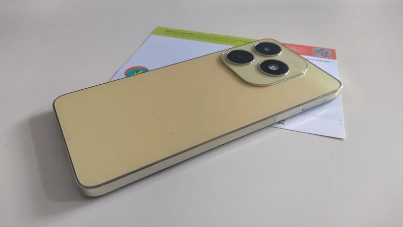
¡Ahora es tu turno de identificar para que necesitas el celular!
Paso 2 → Establece un presupuesto
Antes que todo, define cuál será tu presupuesto, para esto puedes hacer las cuentas de cuántos días de trabajo estás dispuesto a invertir para este aparato. No te endeudes por un celular, muchas veces nos ofrecen financiación a 1 o 2 años, y el celular se nos daña o no lo roban antes de terminar de pagarlo.

Una vez tengas claro lo anterior, podrás saber a qué características debes prestarle mayor atención.
-
Cámara Si te encanta tomar fotos te dejamos algunos aspectos que son centrales a la hora de detallar la cámara de tu equipo:
-
Resolución Esto es lo que comúnmente conocemos como megapíxeles, aunque es muy importante no es todo lo que debemos observar al momento de evaluar una cámara. Cuantos más megapíxeles tenga, el detalle que verás en las imágenes será mayor. Sin embargo, debes tener un límite. Lo estándar podría ser una cámara de 12 MP, pues si tiene buenas características y un excelente procesamiento de la imagen, obtendrás fotos de gran calidad. Si empiezas a tener fotos de mayor resolución los archivos serán muy pesados y llenarán el almacenamiento interno de tu celular rápidamente.
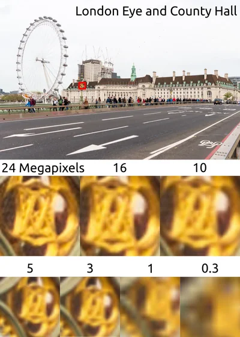
- Sensor y lentes Una buena cámara para celular debe tener un sensor de calidad, así como varios lentes. Esto último, de hecho, se ha convertido ya en un estándar. Al combinarse, permiten obtener mejores imágenes. Uno de los lentes más populares es el gran angular. Gracias a este se incorpora mucha más información a las fotografías y aporta un ángulo visual de hasta 120 grados, perfecta para fotos grupales o en interiores donde no hay mucho espacio.
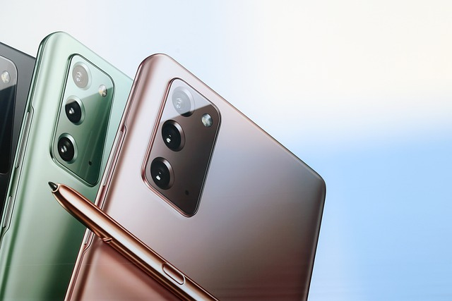
- Apertura La apertura del lente será fundamental para una buena foto, esta característica define que tanta luz puede captar la cámara. Se identifica con la letra f seguida de un número, por ejemplo, f1.9 o f 2.0. Mientras menor sea este número, mayor será la cantidad de luz que captará la cámara. Por esto, es importante que sea bajo, pues con una mayor entrada de luz, las imágenes tendrán más detalle.
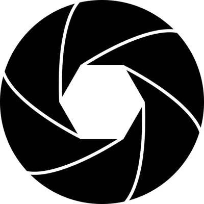
- Pantalla Una pantalla definirá si se nos cansan más o menos rápido los ojos, si veremos, o no, cierto grado de detalle o que tan rápido se consumirá la batería.
Cuando tienes claro que tu celular debe ser un dispositivo que usa de manera grupal, como pasa cuando hacemos SOLE, esta característica cobra importancia, puesto que no es tan fácil que varias personas lean en una pantalla pequeña.
- Tamaño de pantalla El tamaño de las pantallas de celular ha aumentado con el tiempo, aunque de unos años para acá se han mantenido sin crecer mucho, ya que, pierden su función de portabilidad en el bolsillo. Podríamos decir que la mayoría de los celulares están entre 3.5” y 6” (esto mide la diagonal de esta, es decir de una esquina superior a la esquina inferior contraria). Realmente acá si depender de tu gusto, ¿quieres una pantalla grande que te permita ver un vídeo desde lejos entre varios o prefieres una pequeña para que tu celular no llame tanta la atención?
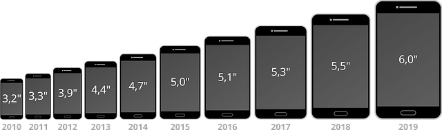
-
Tecnología de la pantalla La tecnología Full HD es más reciente que la HD y el número de píxeles es mayor frente al HD que funciona con 1.280 x 720 píxeles. El sistema Full HD da un aspecto mucho más real a la imagen. Esta última tecnología sólo esta llegando en los últimos celulares con paneles grandes, ya que no tiene mucho sentido alta resolución en pantallas pequeñas.
-
Tipo de pantalla Hay diferentes tipos de pantalla, pero en el mercado actual dos son las más populares: Las de tecnología LCD, también conocidas como inorgánicas, y las de tecnologías OLED, conocidas como orgánicas.
-
LCD: Son las pantallas de cristal líquido retroiluminado que suelen cubrir todo el panel. En el pasado eran las más populares, pero cada vez se producen en menor cantidad. Al ser retroiluminados consumirán más energía, pero por esta misma razón se ven bien bajo la luz directa del sol.
-
OLED: Estas pantallas se diferencian de las LCD porque sus materiales le permiten generar luz por si misma cuando se le aplica electricidad, esto les permite apagar o prender cada píxel de manera independiente, por lo que consumen menos energía. Además, terminan siendo, más brillantes y teniendo una mejor definición del color negro.
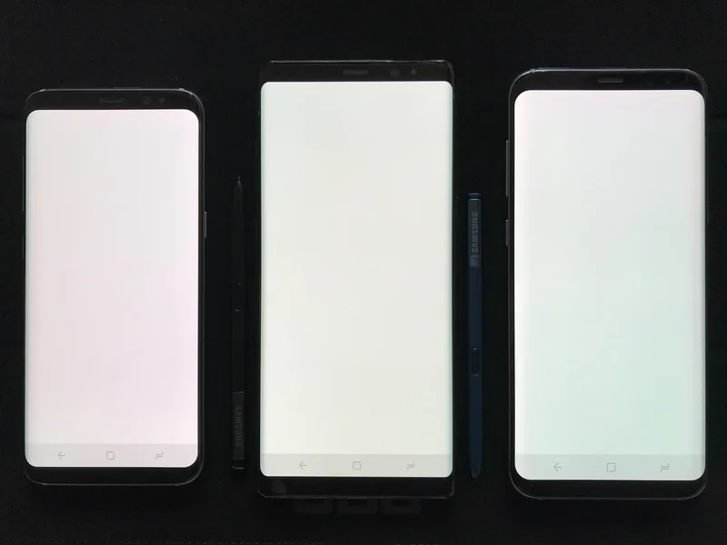
-
Almacenamiento interno El almacenamiento interno define la cantidad de archivos que podemos guardar en nuestro celular, es como el disco duro → en un computador. Esto determinara cuantos programas puedes tener un instalados a la vez, si puedes o no guardar todo tipo de archivos. En estos momentos recomendamos comprar un celular con al menos 64 GB de memoria interna. Además, ver la posibilidad si tiene la opción de recibir memorias microSD para ampliar la capacidad en un futuro.
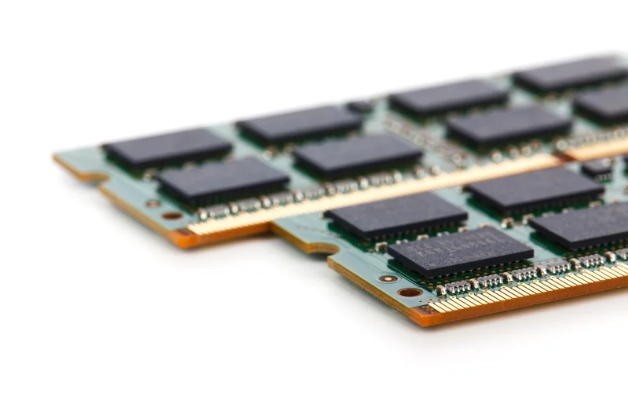
- Memoria RAM Esta es la memoria temporal del celular, ayuda en el desempeño y da una pista de cómo de rápido abren las aplicaciones y que tan rápido fluye el celular. Recomendamos un mínimo 4GB de RAM.
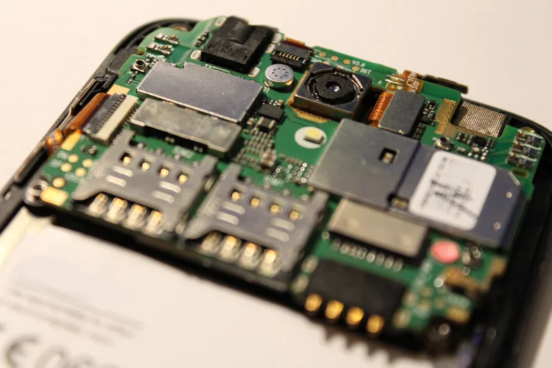
- Procesador El procesador es el cerebro, es el que siempre esta despierto y recibe las instrucciones. Entre mas núcleos tenga el procesador mejor desempño tendrá, aunque también dependerá de la marca. Acá, la mejor opción es que mires el nombre del procesador que usa el celular que te llama la atención e investigues un poco por tu cuenta. Ojalá que no haya salido hace más de 4 años.
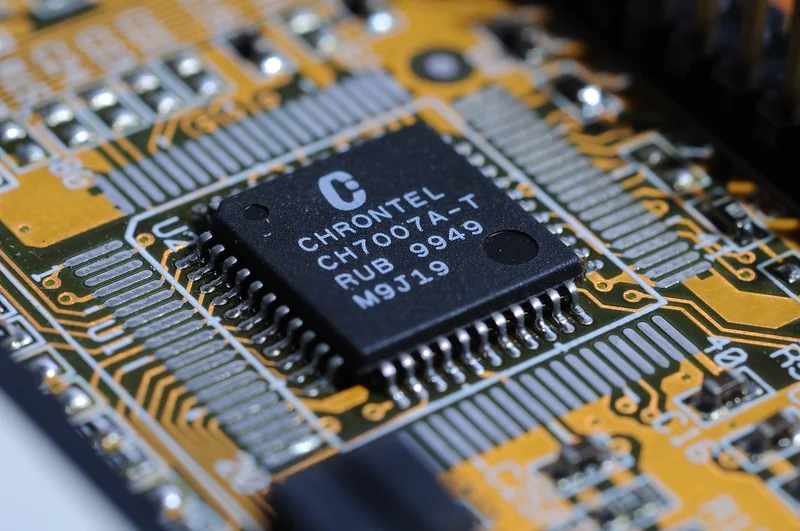
-
Batería
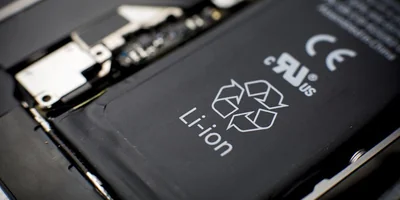
-
Compáralo con otro celular Una vez tengas algunas opciones interesantes es importante que las compares, para esto no tiene porque hacerlo de manera manual, hay varias páginas que ya hacen esto de manera automática. A continuación, te dejamos algunas:
Acá comparamos mi celular contra un Motorola:
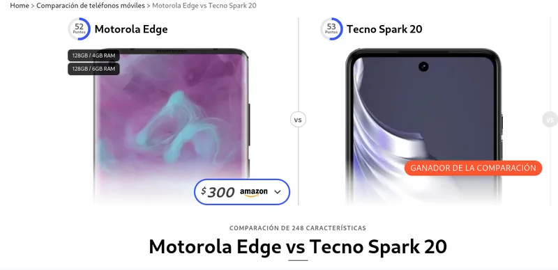
Además de que el Tecno Spark 20 sale mejor calificado en sus características, podemos ver que en el mercado colombiano tienen los siguientes precios:
- Motorola Edge 30 Neo Dual SIM 128 GB very peri 8 GB RAM - $ 849.900 COP
- Tecno Spark 20 Dual SIM 256 GB Negro 8 GB RAM - $ 499.000 COP
💡 Podemos tener un mejor celular ahorrándonos $ 350.000 COP al arriesgarnos a probar una marca emergente
No te dejes engañar
Es importante que constantemente revises las marcas emergentes, normalmente aparecen marcas con poca publicidad, muy buenas características y un precio bajo. Sin embargo, muchas veces por costumbre y experiencia seguimos comprando la misma marca del celular pasado. Por ejemplo, mi mejor amigo lleva desde la universidad con la marca Motorola, a mí me parece que aunque es una buena marca, maneja costos muy altos y prefiero marcas nuevas más economicas que tengan buenas referencias para ahorrar algo de dinero.
Otro elemento importante tiene que ver con la garantía, cunado vives en una ciudad central es fácil que si pasa algo con el celular haya una sucursal de todas las marcas disponibles en el caso de que tengas que usar la garantía, pero en ciudades menos centrales, por ejemplo en Bucaramanga, la marca de mi actual celular “Tecno” no tiene oficina, por lo que si vives allí te tocaría enviar el celular hasta Bogotá, pagar más dinero y esperar más tiempo para que te lo devuelvan, pero posiblemente en esta ciudad si allá centro de atención de marcas más populares como es el caso de motorola.
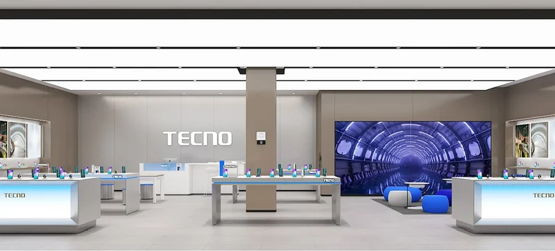
¿Cuánto es suficiente?
Esta pregunta es difícil de responder, pero creo que la podemos reformular de la siguiente manera: ¿La opción que escogiste cumple con la necesidad e intención que proyectaste en un inicio? En ejemplo anterior les mostré cómo considero que el celular que tengo actualmente fue una muy buena opción para mi estilo de vida. Este tipo de razonamientos son los que queremos que hagan al tomar una decisión sobre la opción que van comprar.
Soluciones relacionadas
- ¿Cómo comprar un plan celular adecuado para mi? →
- ¿Cómo compartir Internet desde mi celular? →
- ¿Cómo generar electricidad usando una bicicleta? →
Recuerda que en Voltaje ⚡⚡ puedes encontrar muchas soluciones más para conectarte sin miedo a usar el internet en grupo. ¡Anímate a seguir navegando! Ver más soluciones →
{kind=link}
{kind=link}
.jpg){kind=link}
{kind=link}